對象：18 歲以上對科技有興趣之公眾
成人公眾課程 · 640 分鐘 · 提示詞 → 通道 → 提取 → 呈現 → 閉環
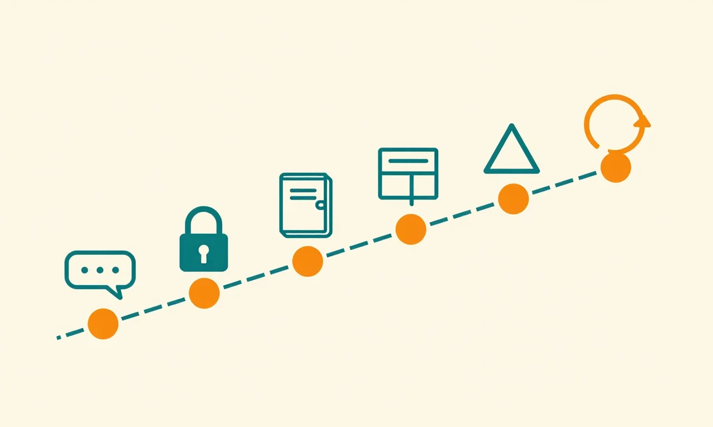
| 階段 | 時間 | 第幾晚 | 你會學到 |
|---|---|---|---|
| 提示詞篇：元素與優化 | 40 分鐘 | 晚 1 | 能把「幫我整理」改成角色／任務／限制／格式 |
| Proton VPN（Chrome 外掛） | 30 分鐘 | 晚 1 | 能說明外掛保護的是這個瀏覽器的通道，不是 Google 裡的副本 |
| 暖身／示範／實戰／成果（現課） | 240 分鐘 | 晚 1–2 | 提取表＋歸納＋出處（正文與四小時審查版相同） |
| 提問即整理 | 120 分鐘 | 晚 3 | 對照表至少一格「來源未載」；FAQ；缺口寫文獻類型 |
| 呈現 | 120 分鐘 | 晚 4 | 先寫四句大綱，只選一種 Studio 輸出，書面仍是主張＋引用 |
| 閉環與四句口頭 | 90 分鐘 | 晚 5 | 收了什麼／丟掉什麼／有引用的發現／不敢結論的缺口 |
這 640 分鐘分五晚上完，每一章都在自己的晚上收尾，不會切在半路。
| 哪一個四句 | 在哪一頁 | 拿來做什麼 |
|---|---|---|
| ICIO 四格 | 頁 13 | 寫給聊天 AI 的提示詞骨架 |
| 焦點欄四句 | 頁 135 | 按下 Studio 生成之前填的那四句 |
| 大綱四句 | 頁 138–139 | 主張／證據／證據／限制 |
| 口頭四句 | 頁 151 | 收了什麼／丟了什麼／有引用的發現／不敢結論 |
（本章 40 分鐘）
先不要打開 NotebookLM，也不要打開 VPN。
已經會寫提示詞的人：這 40 分鐘請只盯一件事——它為什麼給你散文，不給你可以逐格檢查的表。
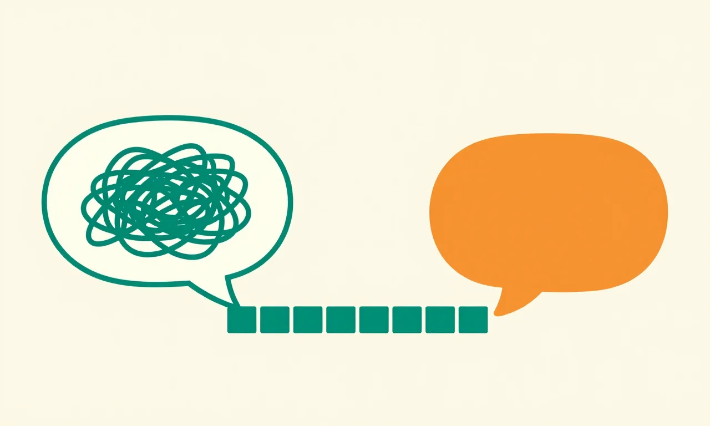
大語言模型根據前文，一次預測一個最可能的下一個詞。它不是理解之後再思考。
今天會把上堂的可讀資料堆餵進閱讀工具。餵之前先練上堂沒當主線的事：你怎麼問。 前文糊，後面每個詞都在猜一個「聽起來像整理」的世界。
老師現場示範（學員只看，不要動手）：老師在自己的筆記本打一句「幫我整理這些運動資料」，把吐出來那段通順摘要投影出來。看兩件事——它給的是散文不是表；而且每一句都指不出是哪一份檔講的。你們這四十分鐘不碰產品，先把問句練好。
第一題補「藍色」，是語料裡的高機率，不是它剛才看了窗外。第二題 26 是穩定事實；換成來源裡的冷門數字——每週分鐘數、年齡——它就可能編。
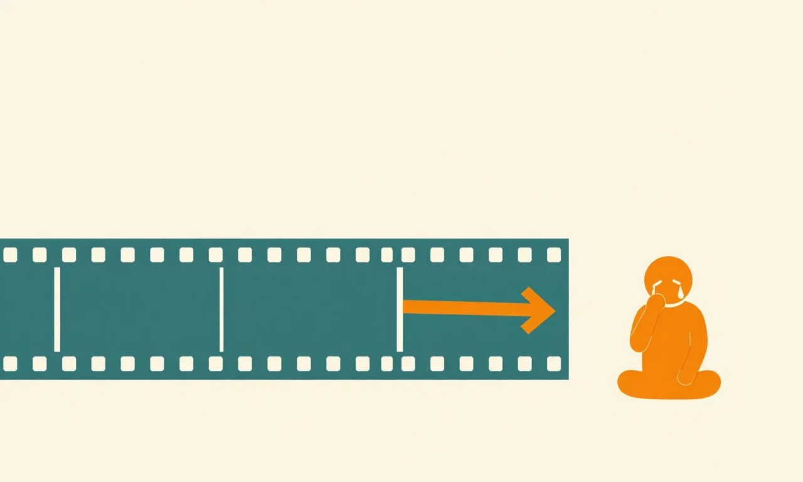
上下文是讓 AI 明白「這句話在什麼情況下說」。跳到電影第 50 分鐘，你看不懂角色為什麼哭。
辦公場合的上下文＝給誰看、哪個地方、期限、既有格式。沒有上下文，它會自己編一個看起來像機關的世界。
今天已經有的上下文：想開始規律運動的中年人；上堂那堆來源；港澳。
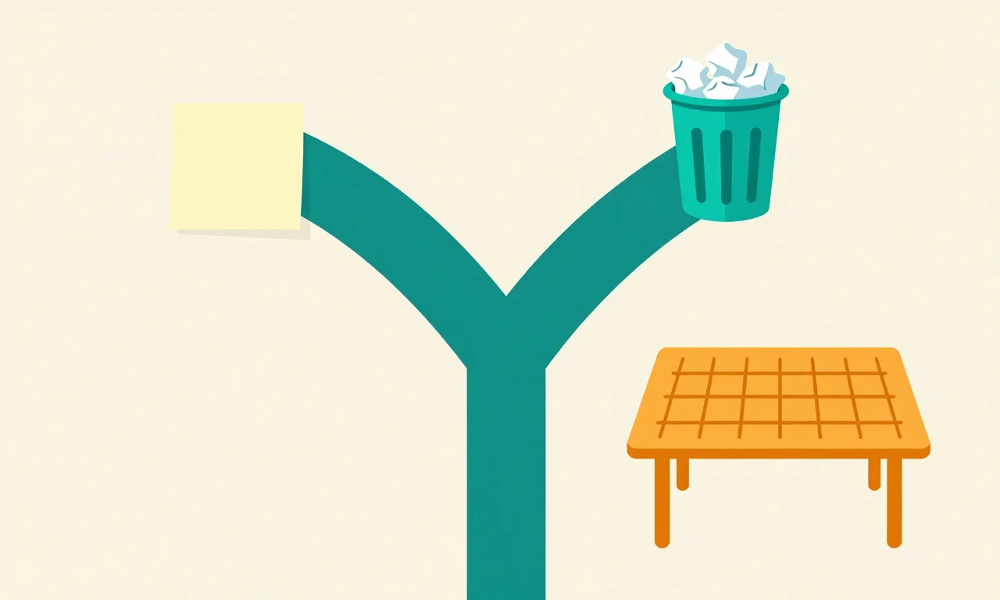
提示詞＝你給生成式 AI 的初始訊息。短可以是一句，長可以是規格書。
它告訴模型：任務目標、限制、輸出格式。原則：什麼進，什麼出。 垃圾進、垃圾出。
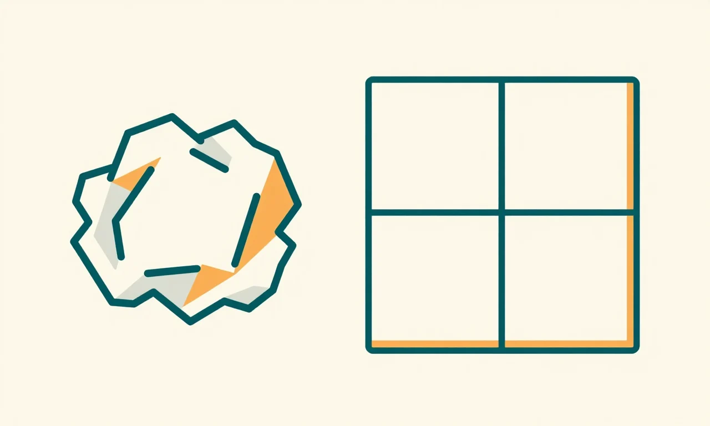
優質那條多了四樣：角色、讀者、要做與不要做、格式。
打開活動頁 #prompt，先把模糊那句抄進去。這一頁還不准改。
「幫我整理這些運動資料」缺的主要是什麼？
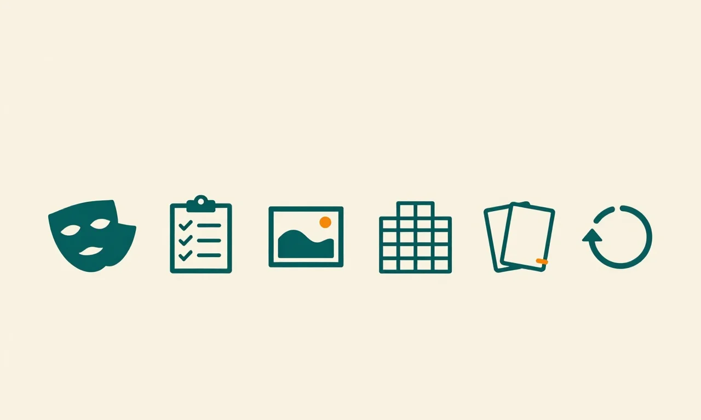
課堂要你帶走的六項（辦公課 p.13）。前四項本堂必填；後兩項加分。
本堂固定不要：補洞、當處方、賣課口吻。
活動頁 #prompt 前四格，用你自己的可讀堆主題（沒帶堆的用「中年人規律運動」）：
| 格 | 你現在填 |
|---|---|
| 角色 | 例如公共衛生護士／中學體育老師 |
| 任務（要做） | 例如對照表，不要摘要 |
| 不要做 | 補洞、當處方、廣告口吻 |
| 格式 | 表／FAQ／條列；空格寫來源未載；繁中 |
倒數 6 分鐘。前四格沒滿的，巡堂停在這一頁。
卡關：角色寫「AI」——還差一步，改成一個有讀者的人（護士、體育老師、45 歲朋友）。任務只寫「整理」——還差一步，改成表或 FAQ。
優化不是背十套英文縮寫。缺受眾或輸出格式才是問題。
菜單（認識即可）：CO-STAR、ICIO、CRISPE、BROKE、RASCEF、BORE、APE、TRACE、ROSES、CLEVER。
今天只深挖兩個：
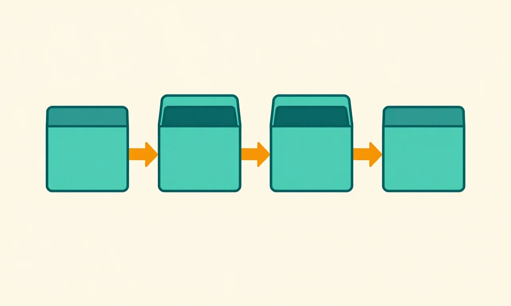
| 格 | 今天填什麼 |
|---|---|
| I 任務 Instruction | 做對照表，不要摘要 |
| C 背景 Context | 45 歲開始運動；來源有官方也有開箱 |
| I 輸入 Input | 只根據勾選的這幾檔 |
| O 輸出 Output | 四欄表；空格寫來源未載；繁中 |
CO-STAR 30 秒反例：「幫我寫 Facebook 叫人來運動」——缺受眾年齡、缺「不要恐嚇」。
活動頁下半：ICIO 四格用自己的堆填完。
舉手（可重疊）：
金句：等下進 Notebook，禁止只打「幫我整理」。ICIO 的 O 沒寫，它就還你一段摘要。
還沒寫完的，現在補。寫完的不要打開 VPN 商店——等下一章一起。
回收六元素（口頭，不投影新表）：角色、指令、背景、格式——這四格等下進 Notebook 每一問都要在。範例與迭代是加分。
（本章 30 分鐘）
仍先不要打開 NotebookLM。
上堂隱私紅線：身分證、病歷、密碼不要貼進任何 AI。那條管的是內容。
今天要在瀏覽器把可讀堆傳到 Google。場地 Wi‑Fi 看不看得到你正在傳檔，是另一件事。我們裝的是 Proton VPN 的 Chrome 外掛，不是桌面安裝檔。
外掛只保護這個瀏覽器。Whatsapp、檔案總管、其他 App 不受它保護。它也不能讓 Google 看不見你上傳的檔。不願放進雲端硬碟的東西，今天仍然不要放進筆記本。
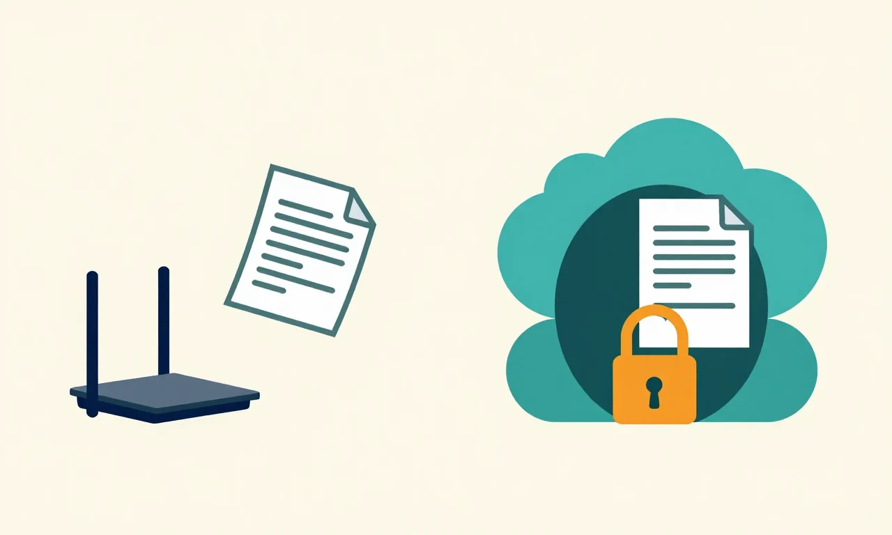
| 外掛沒開 | 外掛已連線 | |
|---|---|---|
| 場地 Wi‑Fi 對這個 Chrome | 看得到你連 notebook.google.com、傳了檔 | 看得到你連 Proton；檔內容不是明文 |
| Google 帳號 | 看得到上傳的來源 | 一樣看得到 |
等下開 NotebookLM 必須用同一個已連線的 Chrome。不要換無痕、不要換另一個瀏覽器、不要用手機 App。無痕模式預設不跑外掛。
系統應用程式保護整部電腦；本堂不評分。免費層伺服器較少，課堂連上即可。
活動頁 #vpn 上半四格用自己的話寫完，必須出現「只保護這個瀏覽器」。
兩個入口，擇一：
只准商店裡、發行者寫 Proton AG 的那一個。仿冒外掛今天當淘汰來源。不要側載、不要 crx 檔。
Edge 第一次開 Chrome 商店：按「允許來自其他商店的延伸功能」。沒有 Chrome／Chromium 的人（只帶 Safari／手機）：這一頁起全部走備案，不改教 iOS App。
課堂不收你的密碼。沒帳的現在註冊；老師不等每人都有帳。
仿冒長這樣：商店名稱像、發行者不是 Proton AG、要你下載 crx。今天當淘汰來源，與上堂丟無作者懶人包同一條肌肉。
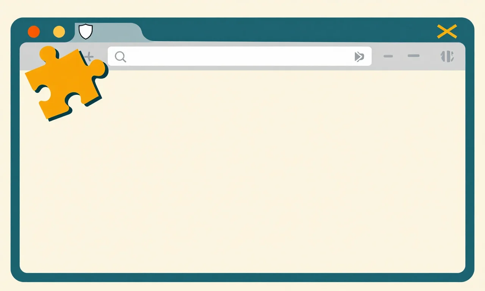
每步報號、停 5 秒。
Firefox 另有官方外掛，非主線。Windows／Mac 桌面應用回家選修，本堂不裝 EXE。
#vpn 寫「已連線／哪個國家／我釘選了」備案四題（老師投影預截的商店頁）：
舉手兩組（可重疊）：
金句：等下登入 NotebookLM，外掛保持連線。斷了就再按 Quick Connect。換瀏覽器等於沒開 VPN。
外掛保護的是通道。Notebook 讀的是你上傳的副本——生成前先從你的檔取片段，不是把整本人生貼進通用聊天。通道加密，Google 一樣看得到檔。
正解：B。Hint：加密的是這個瀏覽器到 Google 的路，不是 Google 裡的檔。Explain：換無痕預設不跑外掛，更不受保護。
（本章 40 分鐘）
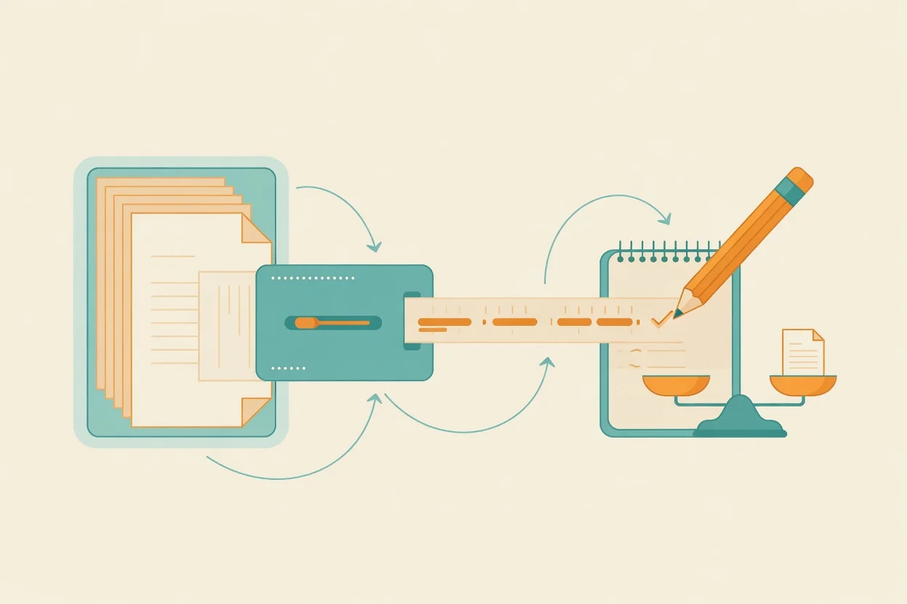
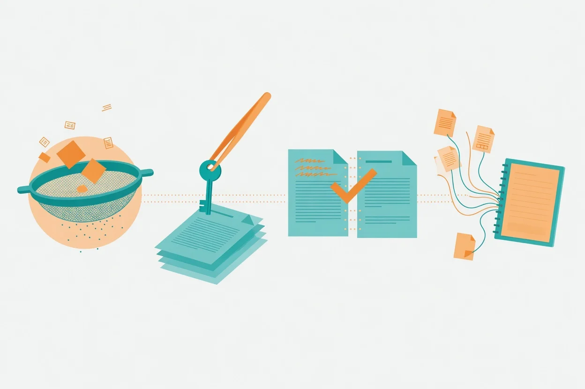
上過上堂的：你手上多了一份「可讀資料堆」——已查證、已分五型、已存文字。第一次來的：等一下頁 30 我用四分鐘把你補上，材料我這裡也有一份，你今天一樣做得完整套。
今天不是再搜，也不是把清單交給 AI 產一份摘要當作業；今天的主角是把已存的文字檔餵進去，填提取表，再經你批判後歸納成筆記。今天主產品是提取表，摘要只是草稿。
今天三步走：
打開活動頁 QR，提取表與歸納可在活動頁填。
拿出可讀資料堆——紙本或照片都行——再把對應的文字檔打開。跟鄰座互相確認：兩個人手上都有表、都有文字。
沒帶的不要慌：等下向老師領範例資料包（6 檔），今天的實作照樣做得到。
今天把資料餵給誰讀？就是 NotebookLM——用 Google 帳號登入。
等下要餵給 AI 的是「文字」，不是截圖。上堂存好的「文字」內文等一下要用；只剩截圖的，現在就補存文字。
沒上過上堂的學員，快速補上三個重點：
有上過的人，這段跟著默唸一遍，當作喚回。
60 秒樣張：投影範例資料包第 3 檔（澳門衛生局「起來。鬆一鬆」）。這是官方新聞裡的指引型：約 15 分鐘、每日 2 次、對上世衛 150 分鐘——所以精讀。今天不當堂打開新聞搜尋當主線。
老師拿範例資料包第 1 檔「世界衛生組織《全球建議》」做例子，全班一起問三個問題，口頭搶答：
對照第 5 檔「健身會館開箱文」：來源是商家自家平台、年份不詳、文內賣課程賣產品——三問缺兩項，淘汰（或降級「僅供參考」）。
規則：三問缺了兩項答案，這筆來源就淘汰。
順帶預告：之後「修提問」會用到提問三式——給身分、給條件、要格式。先記下這句，實戰篇用得到。
手上沒有可讀資料堆的，現在就到Google Drive中領範例資料包——裡面有 6 份文字檔（世衛、衞生署、澳門衛生局、運動科學網、模擬開箱文、體育局嘉年華），檔名就是來源名稱，照樣能完成今天全部實作。
drive.google.com/drive/folders/1iEizn502KQRXDkFsmYSkAx1iCKw90jZs?usp=sharing
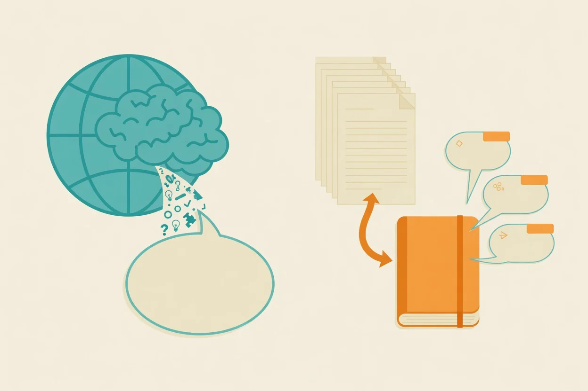
今天用的 NotebookLM 跟一般對話 AI 有一個關鍵差別：它只根據「你丟給它的資料」回答。
| 一般對話 AI | NotebookLM |
|---|---|
| 靠訓練時讀過的東西回答；問什麼答什麼，但來源追不到 | 只讀你給的幾份資料；每個結論都標得出處，追得到 |
一個筆記本＝一組資料。你給它什麼，它才讀什麼。
注意畫面最下面那行小字：「Gemini Notebook 提供的資訊未必正確，請查證回應內容。」——工具自己都叫你要查證。
跟做動作：現在把第一筆來源加進你的筆記本；沒帶資料的，等示範篇看老師操作。
這正是「輔助閱讀」的正確姿勢：不是讓 AI 替你讀書，是讓 AI 幫你把你選好的書讀得更快、重點抓得更清楚。
例子：範例資料包 6 檔丟進去，它給你一份摘要——每週 150 分鐘中等強度有氧、肌力每週 2 天、膝蓋不適先選低衝擊；每句話指得出是世衛、衞生署還是運動科學網講的。選什麼文章、信不信，還是你決定——但一小時的閱讀變成五分鐘。今天真正要帶走的主產品仍是提取表，這份摘要只是草稿。
快問快答 q.organize.01（single／bloom：understand）
NotebookLM 這類閱讀輔助工具，回答問題的根據是？
Hint：「一個筆記本＝一組資料」——它只讀你餵給它的那組。
快問快答 q.organize.02（single／bloom：understand）
你問 NotebookLM 一個「你的資料裡完全沒提」的問題，理想的反應是？
Hint：回想本段的對照表：NotebookLM 只讀你給的資料——問到資料裡沒有的東西，誠實的反應該是什麼？
organize.intro）organize.catchup）organize.how-ai-reads）organize.how-ai-reads）（本章 60 分鐘）
老師把範例資料包 6 檔（世衛、衞生署、澳門衛生局、運動科學網、模擬開箱文、體育局嘉年華）丟進 NotebookLM。第 6 檔必餵。現場先提問做出提取表，再問跨來源歸納；最後才點一次「報告／摘要」當對照組。看的時候注意：每一筆主張都指得出是哪份檔講的，嘉年華那列要標存疑。
這段是老師操作、學員只看不做；示範完會休息十分鐘，安心看。
看示範時，腦子裡記三件事，等下抽人回答：
先記在腦子裡，不寫下來，眼睛盯屏幕。
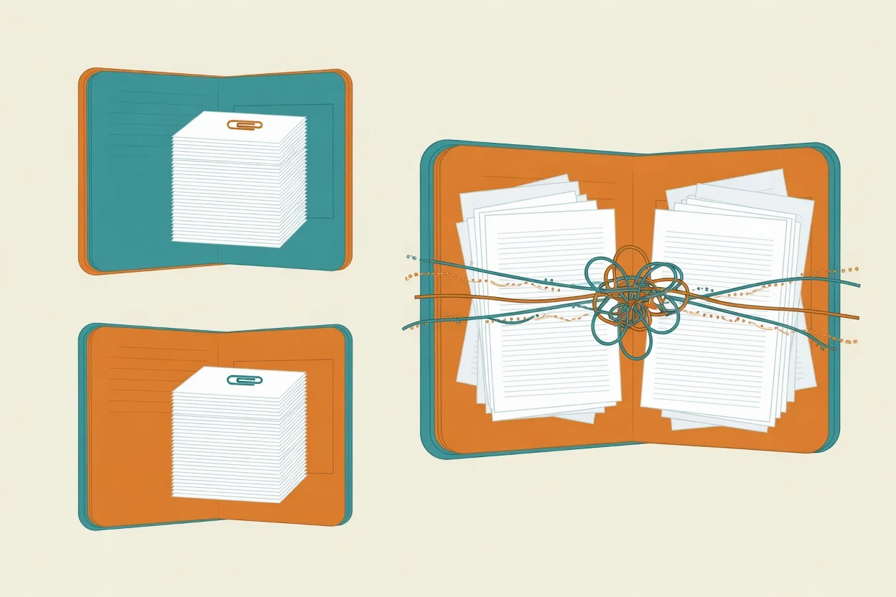
NotebookLM 用 Google 帳號就能登入。它的單位是「筆記本」：先建一個筆記本，把資料放進去，然後對這些資料提問、做出提取。
一個主題一個筆記本（例：「我的重訓問題」）。之後你的資料、你的提問、你的提取表，都住在這個筆記本裡。
為什麼要分本？因為一本筆記本就是你給它的世界：換主題就開新筆記本，不要把第二個主題塞進同一本——塞了，它提問時就會把兩堆資料混著引用，你追來源會追到不相干的檔案，前面講的「只讀你給的資料」就白講了。
命名原則：主題＋用途，看到名字就知道裡面裝什麼（例：「換屋決策——三個屋苑比較」「重訓——膝蓋與菜單」）。名字取得含糊，三個月後你自己也認不出來——這跟成果篇四項自檢的「有自己的話」是同一件事。
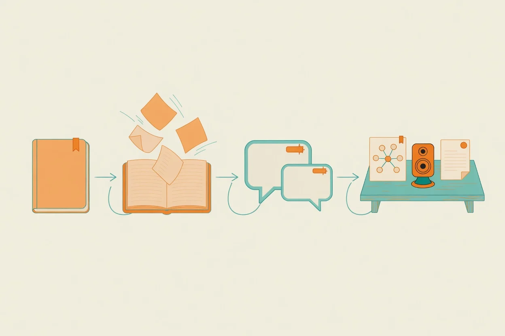
換你動手，三步：
卡關三條線索：
老師用範例資料包現場操作：依序加入世衛→衞生署→澳門衛生局→運動科學網→模擬開箱文→體育局嘉年華。第 6 檔必餵（活動型、略讀），不是漏加，是故意讓它有機會把人次寫成處方。
看的時候注意：每加一份，左欄來源清單多一行；它讀的只有這幾份，別的都進不來。
口頭快問快答（舉手搶答）：
老師在對話區貼上這一整段，不要改寫：
四欄就是今天的主產品：主張｜原文依據｜出處｜我信／存疑。出處＝檔名＝可讀資料堆表的「來源是誰」。
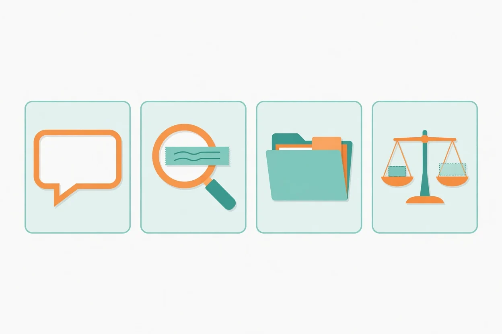
現場產出對照這幾列（數字以原文為準）：
| 主張 | 原文依據 | 出處 | 我信／存疑 |
|---|---|---|---|
| 成年人每週至少 150 分鐘中等強度有氧 | 每星期應進行最少 150 分鐘 | 世衛／第 1 檔 | 我信 |
| 「起來。鬆一鬆」約 15 分鐘、每日 2 次可達標 | 每日 2 次即達世衛 150 分鐘 | 澳門衛生局／第 3 檔 | 我信 |
| 康體嘉年華兩天共 6,000 人次 | 6,000 人次、充氣山丘 | 體育局／第 6 檔 | 存疑／不當處方 |
第 6 檔是官方、是熱鬧，但人次≠個人運動處方。略讀仍必餵，餵了才有機會在表上標存疑。
小練習（記在腦子裡）：哪一列你會改標「存疑」？為什麼？
換成上班的樣子：把三列換成三家供應商——主張＝報價與交期、原文依據＝報價單上那一行、出處＝檔名與日期、我信／存疑＝有沒有寫清楚含不含稅。同一張表，換一批料而已。
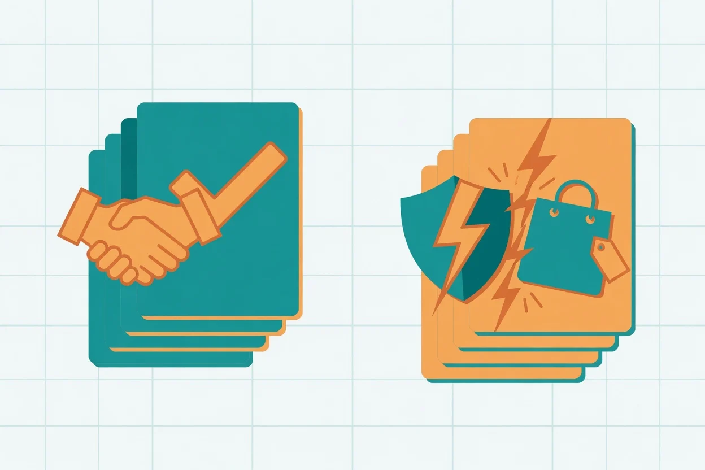
老師再貼上這一整段，不要改寫：
看它怎麼分三堆：同意、打架、不能當處方。這三堆等下實戰篇你自己也要寫。
兩發問完，老師再點一次工作室「報告」（或對話區請它產重點摘要）。這份通順介紹是對照組，不是成品。
盯兩個坑：
這就是為什麼主產品是提取表，摘要只是草稿。
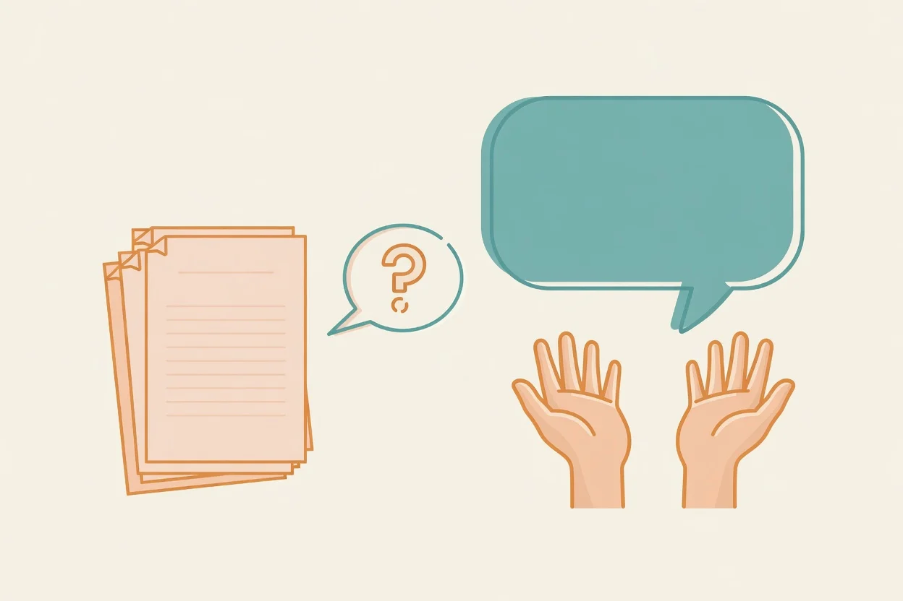
老師故意問一個這堆資料完全沒提的問題——建議問：「這個主題跟青少年近視有沒有關係？」——看它怎麼處理。
全班一起判斷：它老實說不知道，還是開始編？
老師挑兩筆結論，點進來源標記，看原文怎麼說：
結論有沒有扭曲原文？有沒有放大或縮小？點一下就跳到原文段落——這就是「追得到」。
等下實戰篇的「批判檢查」，就是在做這個動作。
先講預期：生成要等幾分鐘，語音以英文為主（部分語言有繁中但品質不一）——回家試的時候別以為壞掉。操作路徑：右邊「工作室」→「語音摘要」→生成。
定位要講清楚：音訊概覽是複習用的，不是查證用的，更不是提取。 語音裡點不到來源標記，不能拿它當結論；聽到跟提取表不一樣的地方，回文字版點標記追原文。
這段是本章的彈性緩衝：生成太慢就只講預期，下課後請學員自己產一次，不要把兩發提問、對照組或「問資料裡沒有的問題」的時間挪過來。
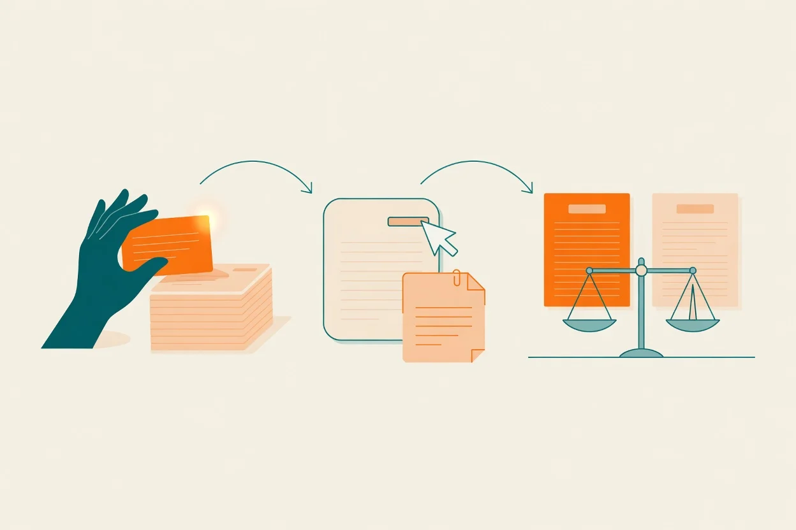
會回溯來源，才叫「用 AI 整理」而不是「叫 AI 亂寫」。
NotebookLM 的每筆結論旁都有來源標記。整理完不要急著收工，抽幾筆做回溯：
跟著老師一起做一遍：
從剛才的示範提取表裡：
跟鄰座各說一句：為什麼它可疑？（例：「不補充氨糖就等於白練」——原文是賣產品的會館自家專欄；「6,000 人次」——活動熱鬧≠我該怎麼開始運動）
抽 2 位說給全班聽。
快問快答 q.organize.03（single／bloom：analyze）
AI 摘要產出來之後，最該先做的是？
Hint：回想剛才示範的回溯動作：挑結論、點來源、對一比——摘要出來後先做哪一步？
快問快答 q.organize.04（single／bloom：analyze）
AI 的摘要漏掉你資料裡一個重點，最好的處理方式是？
Hint：它讀的是你給的資料——漏了，就換個問法請它針對那個重點再整理一次。
organize.notebooklm-walkthrough）organize.notebooklm-walkthrough）organize.trace-source）organize.trace-source）（本章 100 分鐘）
接下來你會把上堂的可讀資料堆（或課堂提供的範例資料包）放進自己的 NotebookLM，填提取表，摘要只當草稿，再用批判檢查與跨來源歸納，修成一份真正能用的重點筆記。
今天下課前，每個人手上要有一份「自己主題」的重點筆記——提取表＋歸納段＋下一步。這是今天帶走的東西。
現在確認，不要等到操作卡住才發現：
這一段主產品是提取表，摘要只是草稿。批判檢查是下一段的事。倒數器啟動：35 分鐘。
把上堂存好的文字內文逐一加入：直接貼入最方便，手機也行。
卡關三條線索：
少於 4 筆，用資料包補；領包 6 檔全加，第 6 檔必餵。
繼續加到精讀檔都在。上傳轉圈超過一分鐘，改複製貼上。領包生核對第 6 檔在不在。
來源列舉手報筆數。少於 4 筆現在領包補，不要等。12 分加檔時鐘到此，沒加完帶進提問頁。
在對話區貼上發一（與示範同一段，不要改寫）：
可同時點一次「報告／摘要」當草稿，那不是成品。
達標線：至少 4 列、至少 2 個不同出處（檔名）、至少 1 列存疑。領包：第 6 檔那列標存疑／不當處方。出處寫「網上看到」的改檔名。
不准按生成。把提取表從頭讀到尾，記下：
讀完舉手。抽 2 位說一個覺得怪的地方——那些就是下一頁批判的起點。第一輪 35 分到此。
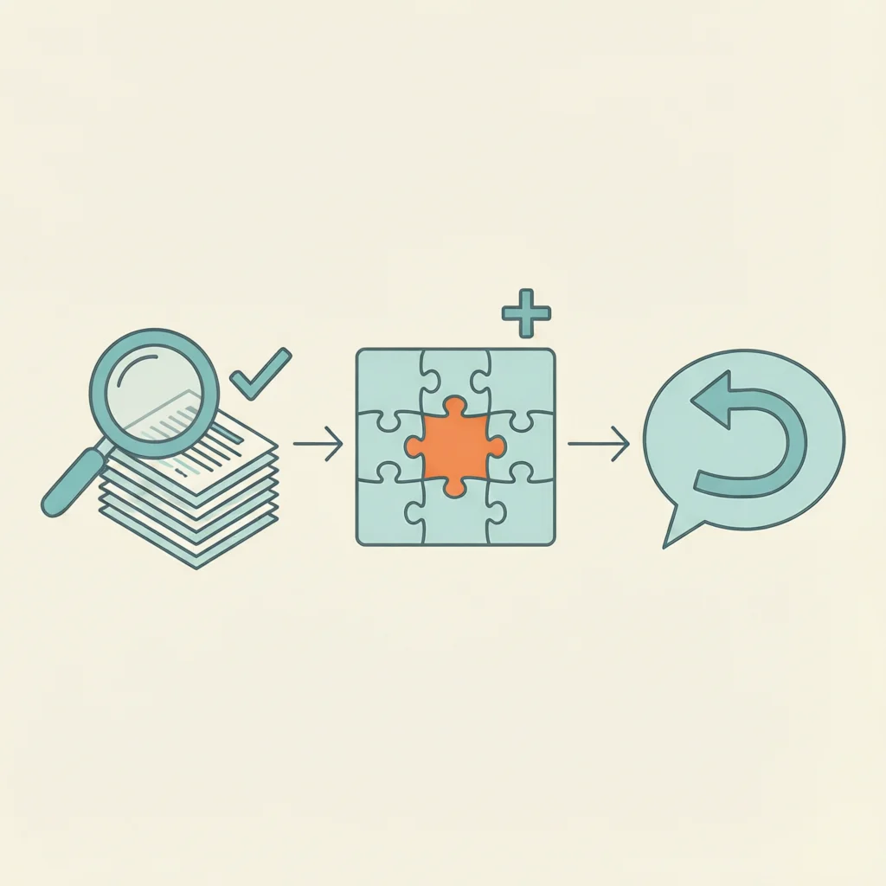
AI 產的摘要是草稿，不是成品。提取表也要過三輪檢查：
三步之後還有短步：跨來源歸納。接下來講一步、做一步，不要搶跑。
從你的提取表裡抽幾筆主張，點來源標記回溯原文：
做完一筆再做下一筆；至少對照兩筆。領包的人必對第 6 檔。
你的資料裡有、但提取表沒列的重點——自己補上去。
重要與否由你判斷，不是由 AI 判斷。
對不滿意的那段，重新問，再產一次：
記得之前預告的提問三式：給身分、給條件、要格式——問法決定它挑什麼。
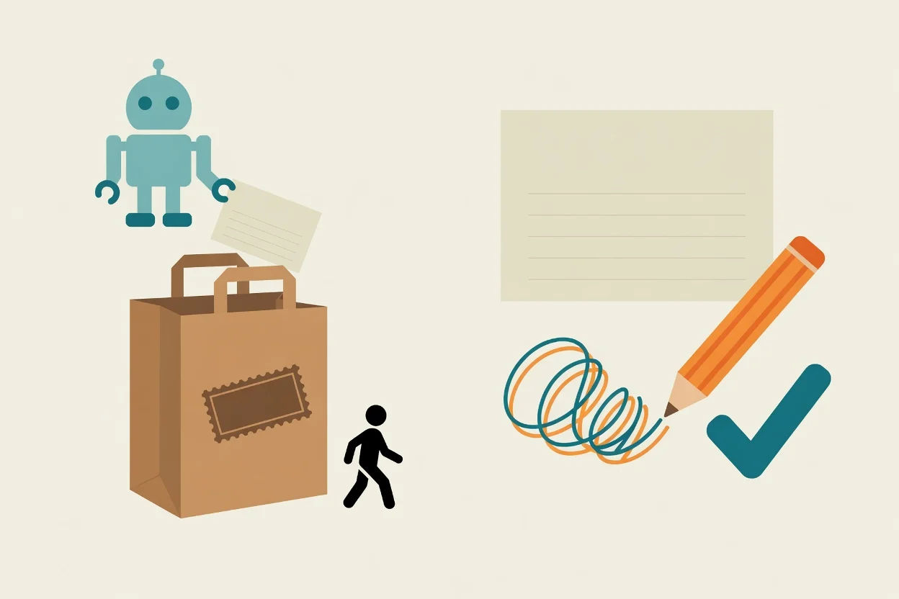
自檢練習：現在看你的筆記一眼——有沒有提取表？有沒有一句「你自己的話」？沒有，等下第二輪一定要補。
三步之後，現在寫歸納。三段都要有字，空白不算：
禁止空白。不要抄鄰座的句子，層級差怎麼寫由你判斷。
快問快答 q.organize.05（single／bloom：analyze）
把六份資料丟進閱讀工具之後，哪一項才算「提取」而不是「只有摘要」？
Hint：摘要會混來源；提取要還原到檔案。活動型官方稿不該被寫成個人運動處方。Explain：正解是 B：主張–證據–出處還原到檔。A 是把摘要當成品；C 與提取無關；D 音訊是加分不是提取。
第二輪開始。順序不准跳：這一頁只做對照。挑一列主張，點來源，抄原文十五字。不一致改表，不要改原文遷就 AI。第 6 檔在表裡必標存疑或寫明不是處方。
遺漏＝堆裡有、表裡沒有。補一列。然後針對漏的那點重問，不要整份重傳。新結果補進表。
中途檢查點：還在對照的先做完對照再說——這步最容易跳、也最值錢。
現在才寫 #synth：同意／打架或層級／下一步。第三段必須是你的話；整段貼 AI 的還差一步，用自己的話改寫一句就算數。抽兩本指存疑列。指不出來現在標嘉年華或開箱。14 分批判時鐘到此。
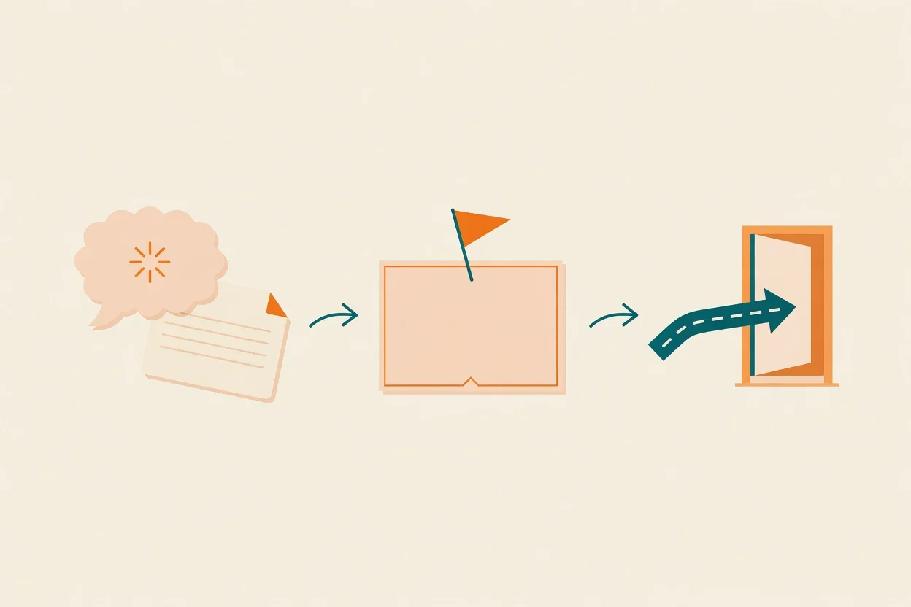
AI 寫它讀到的，你寫你要的：
沒有這三句，還只是 AI 的草稿。
抽一人唸第三句。標準長這樣：「我要找衞生署或世衛有沒有寫膝蓋不適能不能做開合跳。」寫再搜／再問模型的，改口：要找哪一類文件？10 分三句時鐘到此。
複製提取表＋歸納三段＋你的三句。存進備忘錄、電郵給自己、或活動頁截圖。標題寫主題，不要未命名。從頭到尾再讀一遍。心智圖下一頁才做。
問鄰座：下班／放學你打得開嗎？打不開現在改存。十秒內告訴鄰座你存在哪。沒存完用手機拍螢幕也算帶走。10 分定案時鐘到此。
做得快的人：再用「音訊概覽」把筆記變成一段語音，通勤時用聽的複習。音訊是加分，不是提取。
心智圖不要產完就存檔，三步用：
要講清楚的局限：它畫的是「關係」，不是「重要性」。分支多不代表重點多；圖裡的每一個字，標準跟提取表一樣——追得到來源才算數。
還差得遠的人，達標下修：完成「提取表至少 4 列（含出處）＋歸納三段有字＋一句自己的結論」就算達標，心智圖與音訊都不強求。
organize.import-round-one）organize.critical-check）organize.critical-check）organize.critical-check）（本章 40 分鐘）
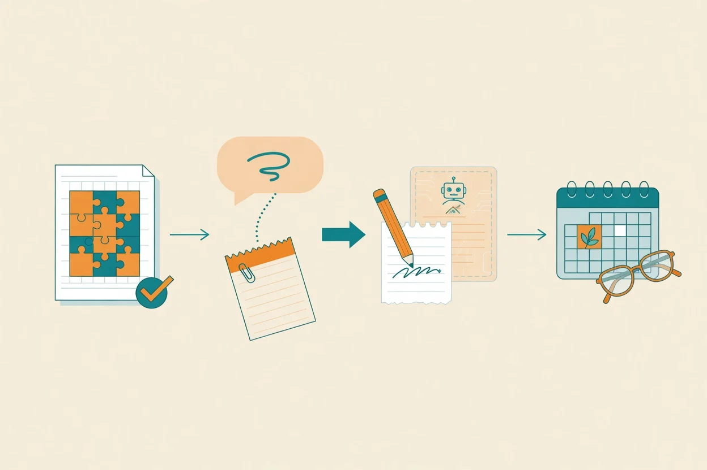
對著你的筆記，四項逐一打勾：
跟鄰座交換筆記，互相當審查員：
對方問倒你的地方，就是你筆記裡該修的地方。
沒被抽到上台的人，你的筆記也在這一步被看見過了。
抽籤或自願，選 3 到 4 位學員。每人一分鐘，講三句話：
每位分享完，老師給一個回饋：
台下的人：記下一個你想借來用的做法，下課前想好要不要用在自己的筆記上。
老師不複述，換你說。四步逐一回問，抽人或搶答：
答得出來，這套方法就是你的了。
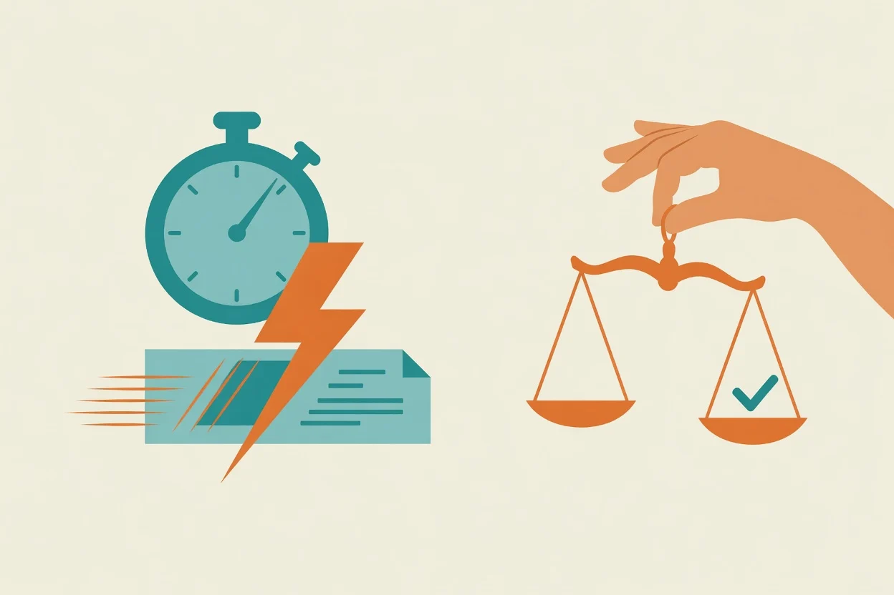
搜（兩通道）→查證→讀（提取＋歸納）→判斷，四步就是整套方法。工具會一直換新，這套方法不會過時。
還有時間的話，現在開放提問——問什麼都行，比多講內容好。
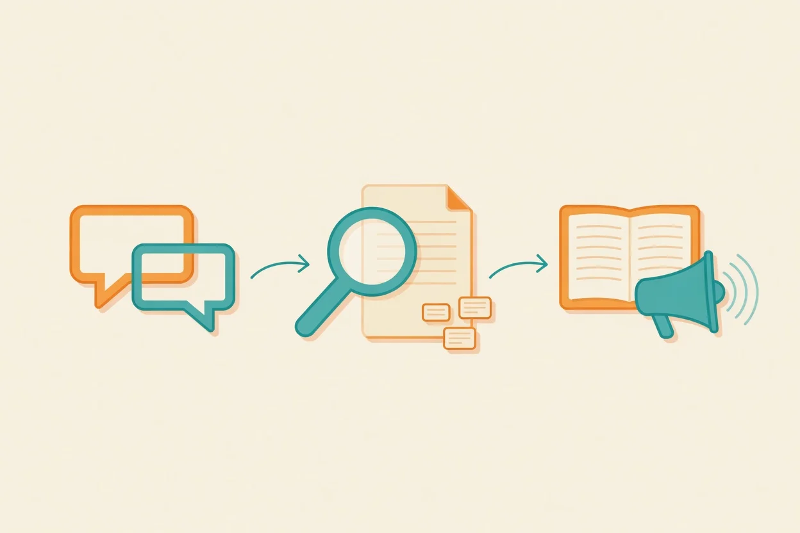
這套方法不綁工具。回家可以用課堂學的三招繼續練：
若將來要找英文學術論文，才用 Google Scholar 或 arXiv。本兩堂不操作。
不交、不改、不評分——但做過一次的人，下週你會明顯不一樣。
提取表與歸納這一段到這裡。你手上已經有一份自己主題的筆記了——提取表＋歸納，有出處、有你的話。
後面還有三件事：對照表、一種呈現、四句口頭。
這一頁只確認一件事：你的提取表，出處那一欄每一列都有字。 完整要帶走什麼，留到全課最後一頁一起講。
organize.notes-checklist）organize.recap）organize.recap）organize.closing）（本章 120 分鐘＝講 35＋工作紙 60＋回饋 25）
同一本筆記本、同一份可讀堆。不要新建「進階本」。
抽兩人：你在現課問「來源沒有」的那題，AI 有沒有老老實實承認？
填洞長這樣：來源沒寫每週分鐘數，它卻給你「150 分鐘」——那是世衛那列滲過來，或訓練記憶。正確只有一句：根據提供的資料，沒有這項資訊。
現課證明它會指回來源。接下來要解決另一個壞習慣：只會問「幫我整理」——段 P 剛禁止的那句。
整理有四層。這一頁只釘第一層：
「幫我整理」＝把決定權交給模型，它幾乎永遠只還你第一層。進階提問一定要指定輸出：表、FAQ、時間軸、待辦、缺口清單。
用今天的運動堆舉例，不要換題：
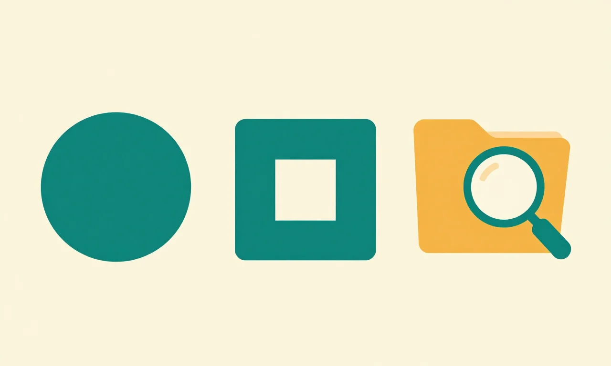
地圖文不要賣「48 小時學完一學期」。要賣三問：
短材料用提示詞庫 B1b，不要硬套六本教科書。問題換了，你就從讀者變成研究者。
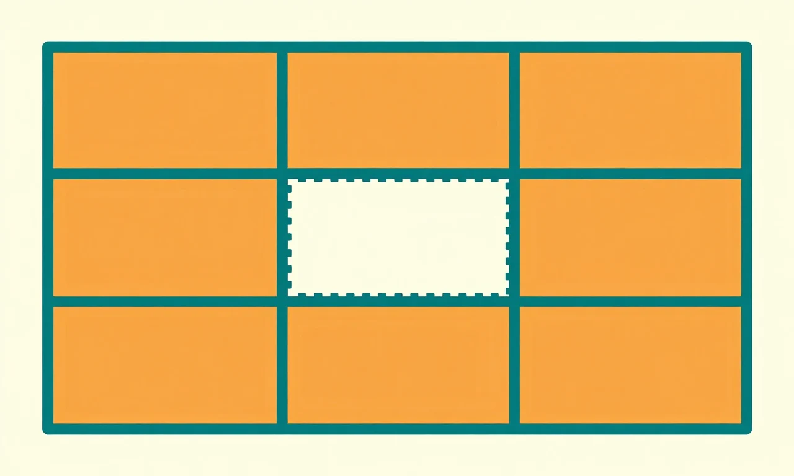
職業場合最有用的整理不是散文，是表。欄位你定，格子它填，空的寫「來源未載」。
請一人把「哪份最好」改成三個表頭。改不出來的，用黑板上那三欄。
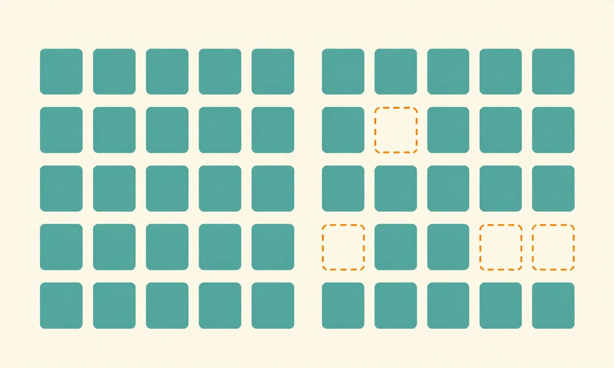
一張全填滿的表，通常代表有人在猜。評量我會看有沒有「來源未載」。
來源勾選是清洗：比三份指引就只勾那三份，不要連開箱文一起勾，否則它會用見證去補分鐘數。
標準：影片或某份指引沒說 150 分鐘，就不能用世衛那列去補。補了＝填洞。
老師本＝資料包那本。只勾世衛、衞生署、澳門衛生局三份指引。學員只看，不要跟著按。
貼「幫我摘要」。等它出一段。指著螢幕：「這是覆蓋。帶不走。沒有未載、沒有打架、沒有下一步。」
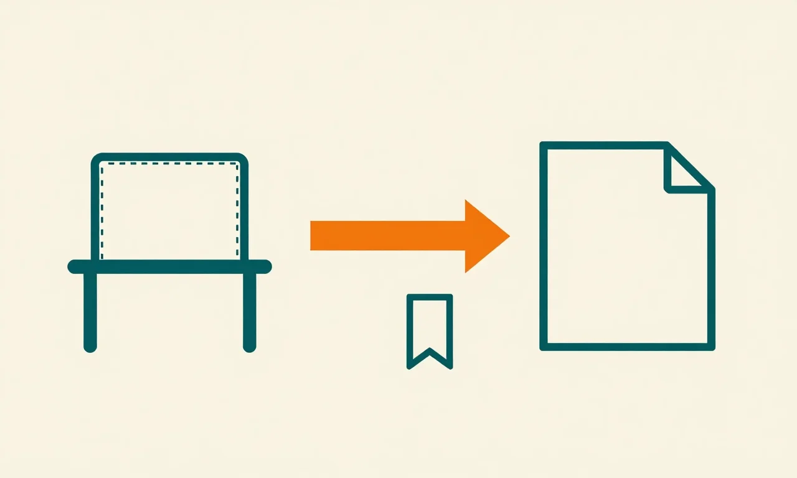
同一批來源，不要取消勾選。
兩條貼之前末尾補同一句：只用我勾的來源；來源沒寫的填「來源未載」；繁體中文。
好回答存成筆記當快照。你自己的判斷用手寫；要讓之後的聊天讀到，再轉成來源。不要把 AI 摘要轉三次。
活動頁 #compare。成功標準：一張對照表（含至少一格來源未載）＋紙上 4 題 FAQ（另 4 題留筆記本）＋五個缺口（含文獻類型）。
| 分鐘 | 任務 |
|---|---|
| 0–15 | 專家十問寫 5 個＋來源已引發但沒答的 2 題 |
| 15–35 | 對照表；沒有未載就重做欄位 |
| 35–50 | FAQ 4 題，題題有引用 |
| 50–60 | 缺口五條；下一步不是「再問 AI」 |
聊天風格可改學習指南。長度先短。自訂可貼：只根據來源，不補洞；沒寫的填「來源未載」；繁體中文。
#compare。登入失敗的用老師本問，仍要填表。倒數開始前齊答成功標準四個字：未載、引用、缺口、文獻。倒數 5 分鐘。寫 2 個「深入研究這個主題的人應該能回答」的問題，並標主要對應哪筆來源。
成功長這樣：問題裡有對象或範圍，例如「45 歲、沒有私人教練，每週最少要多少分鐘？」不是「運動好不好」。
卡關：寫不出來——先抄來源標題，把標題改成問句。
倒數 5 分鐘。再寫 3 題，湊滿 5。其中至少 1 題要問「差異」或「限制」，不要五題都是「是什麼」。
倒數 5 分鐘。寫 2 題：你的材料已經讓你想問、但來源還沒答。這兩題等下會變成缺口。
成功長這樣：「膝蓋不適能不能做開合跳」——來源提到膝蓋或動作，但沒給處方。失敗長這樣：「AI 覺得怎樣」。
前半（0–5 分）：先不要讓 AI 產表。自己在 #compare 寫三個欄位。建議：每週分鐘數／強度／注意事項。不准用「好不好」「值不值得」。
後半（5–10 分）：只勾你要比的 2–3 檔，取消開箱文與活動型。貼 B3，欄位用上面那三個表頭，指令末句寫死：空格填「來源未載」。
貼之前末尾補同一句：只用我勾的來源；來源沒寫的填「來源未載」；繁體中文。
換成上班的樣子：三個方案比一比，表頭就是你要決定的那三件事——成本／工期／風險，不是「哪個最好」。
倒數 5 分鐘。表出來後，用眼睛找空格或「看起來太滿」的格。太滿的點引用；引用對不上就改成「來源未載」。
倒數 5 分鐘。若一格未載都沒有：把其中一欄改成來源比較不可能有的（例如「適用的膝蓋傷況」），再跑一次。評量看有沒有未載，不看表漂不漂亮。
把「來源未載出現在第幾格」寫進活動頁。
前半（0–5 分）：先寫受眾（自己／家人／同事）。然後只寫 2 題 FAQ：問、答（≤80 字）、引用編號。不要行銷口吻。
後半（5–10 分）：再寫 2 題，紙上湊滿 4。另外 4 題若要做，留筆記本，不佔這一頁。每題仍要引用。
倒數 5 分鐘。鄰座只查一件：四題是不是題題有引用編號。沒有的當場補。15 分 FAQ 到此收。
前半（0–5 分）：寫 3 條：還缺什麼才敢結論。下一步要找哪類文件（年報、法條、官方 FAQ、有字幕影片）。不准寫再問 AI。
後半（5–10 分）：再寫 2 條，湊滿 5。提早完成：列出一處矛盾，兩句原句並列（B2）。不准開始 Studio。
前半（0–5 分）：老師投影（或口頭讀）一份只有摘要、沒有未載、沒有引用編號的成品。問：「會後 3 分鐘，你敢把這份轉寄給要開始運動的家人嗎？」先不要投票，只講哪裡不敢。
後半（5–10 分）：投影第二份：有三欄表、至少一格來源未載、有引用。同一句話：會後 3 分鐘轉寄，哪一份能用？
前半（0–5 分）：全班投票「哪份能會後 3 分鐘轉寄」。不要投文筆。投完請兩人用一句話說為什麼。
後半（5–10 分）：抽三本活動頁（或投影三格）。只問：未載在哪一格？缺口的下一步是不是文獻類型？沒有未載的當眾重做欄位一句。
正解：B。Hint：全滿通常是猜。Explain：評量看未載，不是看漂亮。
<!-- E -->
（本章 120 分鐘＝講 35＋工作紙 60＋回饋 25）
不要再做一張提取表。
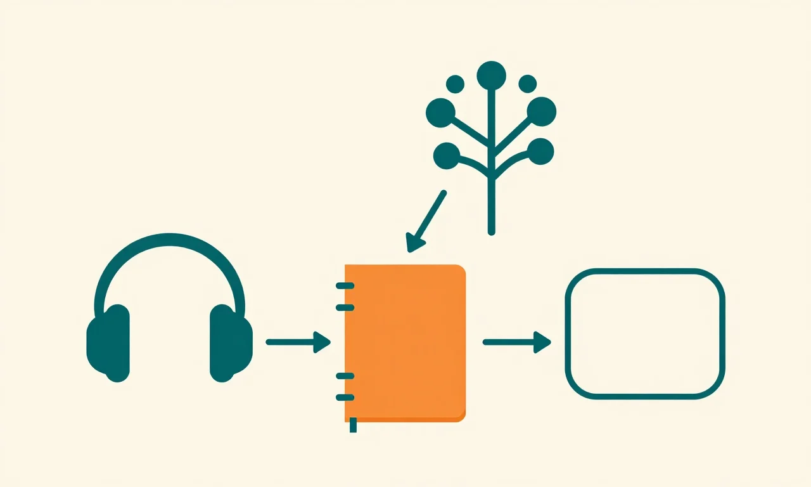
右邊那些按鈕，是同一批來源的另一種閱讀介面。沒核對過的 Podcast 不能當事實。這句今天要聽到厭。
| 你的需要 | 選 |
|---|---|
| 看不出結構 | 心智圖 |
| 要帶去開會 | 報告／資料表 |
| 已經讀過、沒時間坐 | 語音摘要 |
| 要檢查自己記沒記 | 學習卡、測驗 |
| 結構已定要投影 | 簡報 |
螢幕上一共九個鍵：語音摘要、簡報、影片摘要、心智圖、報告、學習卡、測驗、資訊圖表、資料表。今天學員動手七個；影片摘要與資訊圖表由老師預產（最慢、最吃額度），成品頁 136 看。
按鈕是免費的，按下去那一次不是。 免費帳號一堂課只夠生一次，所以今天不練「多試幾次」，練一次就中。
每個都按的人，通常哪個都沒核對。
語音摘要現在有四種格式，不是兩種。選錯格式，你唯一那次就沒了：
| 格式 | 它會給你什麼 |
|---|---|
| 深入探索 | 兩人熱烈對談，最長最好聽；複習已讀材料用 |
| 摘要 | 最短，90 秒抓三個數字；老師預產的就是這個 |
| 評論 | 對你的內容提專業建議——最容易講出來源沒有的話 |
| 辯論 | 兩人各站一邊；本堂最推薦，它會把來源打架處講出來 |
生成前改繁中、寫焦點。音訊適合已經讀過的材料，不適合第一次碰公式或圖表。免費額度音訊大約每日 3 次，所以音訊全班示範即可，不要 30 人同時按。千人場由老師預產。
老師預產 Brief，聽 90 秒。每人寫下一個主張。先不要核對，下一頁才回聊天。
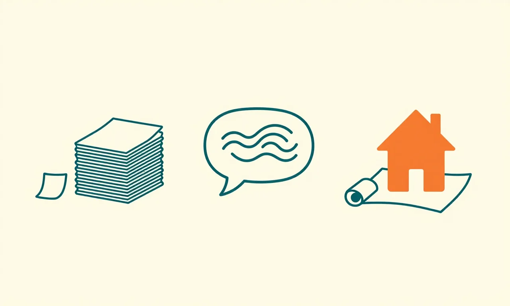
評量看結構與引用，不看漸層。YAML、Canva、第三方改字工具，十小時不夠教。
第 2 步就是等一下說的「勾」，第 3 步就是「寫」。中間還有一格「選」不要按錯：簡報的格式有兩個——詳細簡報是給人讀的長文件，簡報投影片才是上台用的。想要投影片卻選到詳細簡報，你唯一那次就用在一份電郵附件上了。
匯出 PPTX 常常是圖片，文字難改。課堂分數打在大綱，生成留給有大綱的人回家。
九個鍵的焦點欄長得不一樣，要填的東西是同一套：早上那個 ICIO，縮成四句。
| 第幾句（＝ICIO 哪一格） | 照抄這個骨架 |
|---|---|
| 第 1 句（I 任務） | 做〔什麼〕，〔幾頁／幾題／幾欄／第一層幾枝〕 |
| 第 2 句（C 背景） | 給〔誰〕看，看完要做〔一個什麼決定〕 |
| 第 3 句（I 輸入） | 只用我勾的來源／完全照我的四句大綱 |
| 第 4 句（O 輸出） | 不准自加、沒寫的填「來源未載」、繁體中文 |
簡報這一種填出來就是（提示詞庫 D5／D6 精神）：完全照大綱、不准自加觀點、不准漏頁、每頁字要少、逐字確認繁中。其餘八種照同一個骨架填，卡在附錄 A。
不要寫：「幫我做得漂亮一點。」漂亮不是可核對的格子。
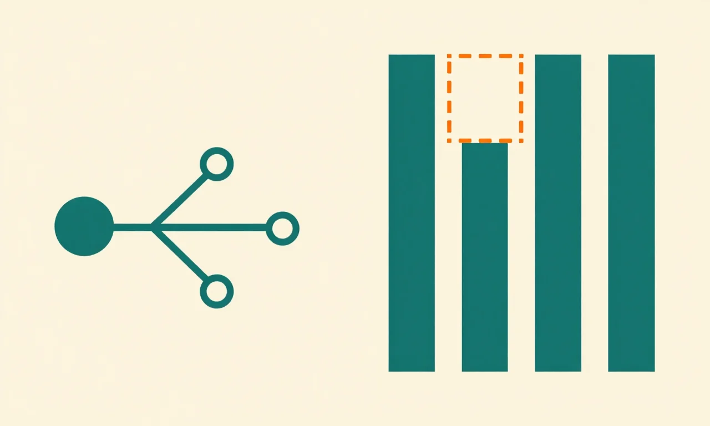
心智圖：用來發現自己沒注意到的分枝，不是海報。看到分枝，回聊天要引用。它的欄位問「主題是什麼？」——問句短，你就填短：
資料表：跨來源抽欄位，可匯試算表。這是辦公室最像「提取歸納」的鍵。欄位仍然你定，空格仍然未載。它的欄位問「請說明要建立的資料表」——問句長，你就把欄位名直接唸進去：
換成上班的樣子：把四欄換成來源檔名／數字／條件／適用對象——那就是你下週要貼進會議紀錄的那一張。
兩格問法不一樣，填的長度就不一樣：問「主題」的填一個題目加一個限制，問「說明」的把欄位名寫出來。照著問句的長度填，比背範本可靠。
千人場建議：約八成做心智圖或資料表或只交大綱。影片摘要與資訊圖表由老師預產——不是學員不能用，是它們最慢、最吃額度，而你們每人只有一次。
活動頁 #present。每人只選一種 Studio 輸出。書面仍繳「主張＋引用」，不能只交音檔。簡報組強制先交大綱給鄰座改，再生成。
| 分鐘 | 任務 |
|---|---|
| 0–20 | 四句大綱＋鄰座改邏輯（所有人都先寫，含非簡報組） |
| 20–45 | 生成與核對：輸出裡抄三個主張，回聊天要引用 |
| 45–60 | 五句話寫給沒看過來源的人 |
生成前：語言改繁中；有寫焦點。
前半（0–5 分）：寫給誰看、看完一個決定、第 1 句主張。主張必須能指回來源，不能是「運動很重要」。
後半（5–10 分）：寫第 2、3 句證據，標來源檔名。兩句不能來自同一格空話。
前半（0–5 分）：第 4 句必須是限制或反例：適用年齡、未載的傷況、開箱文不能當處方。沒有第四句，大綱不算完。
後半（5–10 分）：鄰座只改邏輯與數字，不改文筆。改了什麼寫在 #present。簽名。沒有鄰座簽名，下一頁不准生成。
前半（0–5 分）：還沒按。生成前你能動的只有三層，三層全是免費的，按下去那一次才要錢：
| 層 | 現在檢查什麼 |
|---|---|
| ① 勾（來源） | 只勾這次要用的。簡報組：大綱存成筆記再轉來源，只勾這一則 |
| ② 選（下拉） | 語言繁體中文；格式／長度／難易度／數量選好 |
| ③ 寫（焦點） | 四句寫齊：做什麼＋幾個、給誰看、只用我勾的、不准自加 |
最有力的是①，不是③。 勾錯來源，焦點欄寫得再漂亮也救不回來；而勾與選改幾次都不花額度。
後半（5–10 分）：按之前先做最後一道免費的檢查：把你的焦點四句唸給鄰座聽 15 秒。 鄰座只問一句：「第 1 句有沒有數量？」
然後按一次。排隊就等，不要改按另一種。音訊配額用完改心智圖。
前半（0–5 分）：從輸出抄第 1 個主張，回聊天要引用。來源沒有就標「誰在加油」。
後半（5–10 分）：再抄兩個主張，同樣回聊天核對。測驗／學習卡組：錯了幾題、explain 之後回到的原文句，寫在活動頁。
倒數 5 分鐘。三個主張裡圈一句「最可能是加油」的。沒有也要寫「三句我都點過引用」。25 分生成段到此。
前半（0–5 分）：寫給沒看過來源的人。前三句：每句能指回來源或標未載。不能只交音檔。
後半（5–10 分）：第 4 句限制或反例；第 5 句一個決定。60 分工作紙到此收。
倒數 5 分鐘。鄰座只問：「哪一句沒出處？」沒有的現在補。60 分工作紙到此收。
前半（0–5 分）：重播老師預產 Brief（或第一段 90 秒）。任務：找一句來源沒有、主持人加油的話。先寫原句，後半才討論。
後半（5–10 分）：抽三人讀自己抄的原句。全班判斷：來源有沒有。有爭議就點引用，不要用多數決當事實。
前半（0–5 分）：抽兩本 #present 五句。只問：哪一句沒出處？哪一句是限制？沒有限制的，請他現在補。
後半（5–10 分）：舉手：心智圖／表／大綱／音訊／測驗。每一種抽一人：「你核對了哪一句？」答不出來的，那一種輸出今天先當草稿——核對過一句，它就算成品。
正解：B。Hint：按鈕換的是介面，不是證據。Explain：沒核對的 Podcast 不當事實。
<!-- F -->
（本章 90 分鐘）
原料必須是上堂可讀堆＋本堂提取表／對照／守門。不准換題。
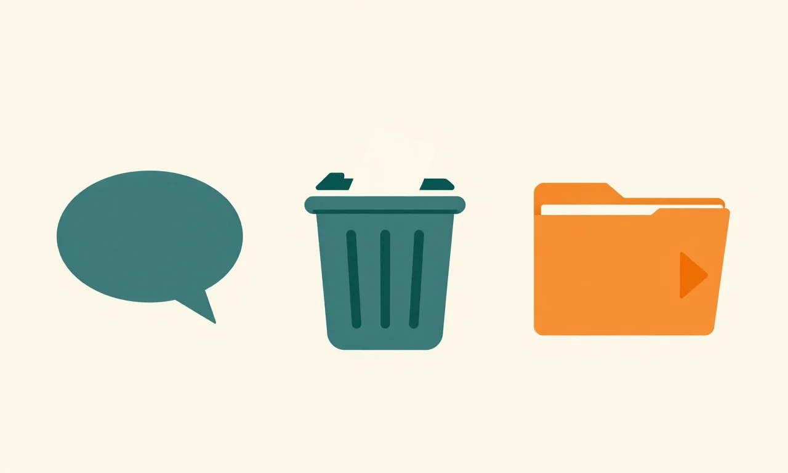
專家會做三件新手不做的：把問題寫到不能再糊、會丟掉來源、會寫下一步要找哪類文獻。
傲慢是敢丟來源。謙虛是敢說不敢結論。兩句都要有。只有傲慢會偏食；只有謙虛會永遠在收集。
3 分鐘報告只准這四句，超時打斷：
沒有第四句，不算完。聽的人只准問：你哪一句還沒核對？
#oral 頂端，現在還不填內容。選一條走到底。不要三條都做一半。原料仍是同一堆。
三桌的提示詞已經寫好在手卡上（附錄 C），每一條都有編號。工作紙「問」那一格要填的就是那個編號。
老師投影預先截好的 Discover 候選約 6 筆（含 1 筆業配）：候選 ≠ 來源 ≠ 證據。學員不跑 Discover／Deep Research。
老師這 8 分鐘同時示範「研究題怎麼寫」（備課包 03_提示詞庫 C1 四格，學員只看不做）：
| 格 | 老師當場唸出來的 |
|---|---|
| 範圍 | 中年人開始規律運動的官方建議，港澳與國際 |
| 給誰／做什麼 | 給 45 歲的自己，用來決定這週先做哪一種運動 |
| 不要什麼 | 無日期懶人包、賣課頁、健身房業配 |
| 期望產出 | 候選清單，不是結論 |
第三格是整段的重點：「不要什麼」寫不出來的人，候選清單一定會混進業配。
隱私：一人一本。不願上 Drive 的，繼續用老師本。
#oral 圈一桌。業配那筆全班口頭「丟」。前半（0–5 分）：#oral「找」：題目仍是中年人規律運動／你的可讀堆主題。不准改開保險、食譜、辦公課案例。
後半（5–10 分）：寫你筆記本裡實際留下的筆數與類型（PDF／網頁／影片）。#feed 若現課沒填完，現在補餵／不餵。精讀應餵。
前半（0–5 分）：淘汰列必須進「洗」。開箱文當坑：不當處方。至少指出 1 筆要丟，而且理由要可檢查——這一節看的是理由，不是筆數。
（守門單那套「留 4 丟 2」是獨立守門場的線，見附錄 D；主課這裡不套用。）
後半（5–10 分）：丟掉的理由不能只寫「感覺不可靠」。用：無作者、無日期、層級是開箱、與問題無關、沒字幕。
寫完再補一格（備課包 06_學員工作紙 紙 3 那一句，今天最值得帶走的）：
最危險的不是最爛的那一筆。最爛的你一眼就丟了。最危險的是差一點就被你留下的那一筆。
丟完之後，對留下來的再問一次（C2）：哪幾筆是一手／官方，哪幾筆是二手／行銷？兩邊分不出來的，那一筆先當二手。
前半（0–5 分）：寫主提示詞編號：ICIO、B3、B1b、或段 P 的優質版。禁止只寫「幫我整理」。
後半（5–10 分）：貼進聊天跑一次。好回答存筆記當快照。不要把摘要轉來源三次。
前半（0–5 分）：點一個引用，抄原文至少 15 字。一致或不一致寫在 #oral 核。
後半（5–10 分）：若一致，寫「一致＋引用編號」。若不一致，兩句並列。沒有不一致也要寫「我核過第 X 句」。
前半（0–5 分）：寫給誰看、什麼格式（表／五句／大綱）。這就是四層的行動層。
後半（5–10 分）：鄰座只看「出」那格：給誰、格式。30 秒看不懂的，改短。這是全課評量那把尺。
前半（0–5 分）：缺口兩條含文獻類型。口頭第 1、2 句：收了什麼、丟掉什麼。
後半（5–10 分）：第 3 句有引用的發現；第 4 句不敢結論。沒有第四句不算完。提早完成：缺口 1 真的找到一筆公開來源網址。
千人場最多 3–4 人。每人 ≤3 分鐘，超時打斷。其餘書面收。聽的人只准問一句：你哪一句還沒核對？
最後 5 分鐘留給你自己的案子——你手上那份真的要交的東西，等一下可以直接問。
| 分數 | 看到什麼 |
|---|---|
| 未過 | 只有摘要、無引用、來源全留 |
| 過 | 有表或 FAQ、有引用、至少一格未載 |
| 好 | 有丟來源的理由、有缺口清單 |
| 優 | 口頭第四句清楚；能指出一處 AI 多講的話 |
#oral。齊答：「超時怎麼辦？」打斷。請第 1、2 位。每人 3 分鐘內講完四句。超時打斷。聽眾只准問那一句。
這 5 分鐘是你的。 一人一題，只問你自己的案子——你手上那份報告、那批報價、那個要交的東西，這套方法怎麼套上去。不是問工具怎麼按，是問「我這種材料該定哪三個欄位」。
收束：回家把缺口清單真的拿去找下一批來源，丟回同一本再問——那才叫知識庫，不是一次摘要比賽。
<!-- END -->
帶走兩件事：
隨身再加三樣：一條 ICIO 提示詞、外掛或備案、四句口頭。
工具會一直換新，查證與判斷不會過時。謝謝大家。
<!-- APPENDIX-A -->